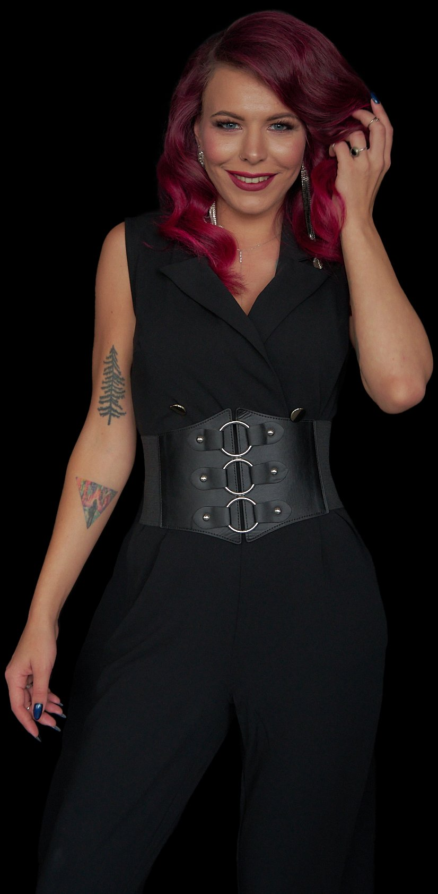

В мужской профессиональной среде женщины часто действуют не из внутренней уверенности и выбора, а из необходимости подстраиваться. Это проявляется как:
Это 8-дневный тренинг, в котором ты меняешь микросигналы поведения, формирующие твою позицию.
Здесь нет эзотерики и «женской энергии», копирования мужского поведения, попыток заслужить уважение удобством.
Здесь есть конкретные инструменты, которые помогают женщине в мужской среде перестать терять свою позицию, меньше уступать и выстраивать коммуникацию эффективнее.
Этот тренинг точно для тебя, если ты:
После завершения тренинга участницы замечают что:
Я много лет работаю с динамикой власти — со стороны системы власти и со стороны корпоративной среды.
Власть в любой системе строится не на количестве усилий, а на поведенческих сигналах, управлении вниманием и умении удерживать рамку. Этому почти никто не учит.
Я вижу, где именно ты теряешь позицию — и знаю, какой сигнал нужно изменить первым. Именно с этого мы начинаем на стартовом вебинаре.

Дополнительно: закрытый чат с участницами · обратная связь от автора · доступ к чату 1 неделю после окончания
Запись и вопросы: Telegram [ссылка] · Email [адрес]
Публичная оферта [ссылка] · Политика конфиденциальности [ссылка]